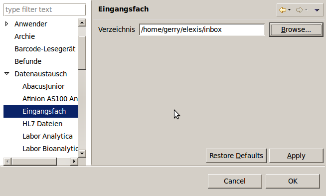
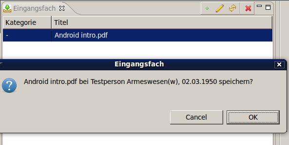

Dieses Plugin überwacht ein Verzeichnis auf der Festplatte und importiert alle dorthin gespeicherten Dateien in die Dokumentenverwaltung von Elexis.
Elexis 2.1 oder höher
Ein Dokumentverwaltungs-Plugin in Elexis, z.B. Omnivore plus oder Omnivore direct.
Erstellen Sie ein Verzeichnis, in das die Importe gespeicher werde sollen, und stellen Sie das Eingangsfach darauf ein.

Nach kurzer Zeit werden in diesem Eingangsverzeichnis automatisch Unterverzeichnise angelegt, die den Kategorien Ihres Dokumentverwaltungssystems entsprechen.
Das Eingangsfach-Fenster zeigt den Inhalt des EIngangsverzeichnisses
Wenn Sie irgendein Dokument, z.B. eine E-Mail oder einen E-Mail-Anhang etc. im Eingangsverzeichnis speichern, dann erscheint dieses Dokument nach einiger Zeit auch in der Eingangsfach-View (Das Plugin schaut standardmässig alle paar Minuten nach, ob neue Dateien angekommen sind). Allerdings kann das System bei solchen Dokumenten ja nicht wissen, zu welchem Patienten sie gehören. Deswegen landen sie in einem „universalen” Eingangsfach, bis sie manuell zugeordnet werden. Sie können bereits beim Speichern die Dokumentkategorie festlegen, indem Sie das Dokument im entsprechenden Unterverzeichnis speichern.
Die Eingansgfach-View hat oben folgende Buttons:
(Mit Rechtsklick auf einem Dokument erhalten Sie dieselben Optionen)
Wenn wir nun auf den „Zuordnen” Button klicken, erscheint eine Rückfrage:

Wenn wir hier mit OK bestätigen, verschwindet das Dokument aus der Inbox und wird ins Omnivore (Oder Ihr sonstiges Dokumentverwaltungs-Plugin) transferiert und dem entsprechenden Patienten zugeordnet.
Sie können den Zuordnungsprozess automatisieren, indem Sie das Dokument beim Speichern entsprechen benennen. Das Eingangsfach wird jedes Dokument, dessen Name mit einer Nummer, gefolgt von einem Unterstrich und dem eigentlichen Namen besteht, dem Patienten mit dieser Nummer zuordnen. Wenn Sie also ein Dokument als
234_BerichtChirurgie.pdf
im Eingangsverzeichnis speichern, dann wird dieses Dokument automatisch dem Patienten mit der Nummer 234 unter dem Titel „BerichtChirurgie” zugewiesen.